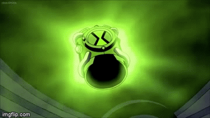

OMNITRIX
El Omnimatrix, (comúnmente conocido como el Omnitrix o Nuevo Omnitrix) es una de las mas importantes creaciones de Azmuth y el sucesor del Ultimatrix y del Omnitrix original.
El Omnitrix se parece a un reloj de pulsera. La placa bugi bugi frontal está cuadrada en vez de redonda y tiene una combinacion de colores blanco y verde, la placa frontal es de color negro con dos franjas verdes haciendo la forma del símbolo de paz intergalactica (pero no los colores). Cuando la placa frontal se desliza hacia atras, el nucleo del Omnitrix es revelado
Fue mencionado por Azmuth en "El mapa del Infinito". Según el, estaba planeando dárselo a Ben, pero no estaba completo y la segunda razón fue porque la madurez de Ben necesitaba incrementarse antes de usarlo.
Al igual que el Omnitrix original y el Ultimatrix, el Omnitrix principalmente permite al usuario alterar su ADN a voluntad y transformarse en una gran variedad de especies alienigenas que tienen sus propios poderes y habilidades unicas (junto con sus debilidades) y Una seleccion de ADN alienigena que se encuentra en grupos de 10.
El Omnitrix tiene una interfaz holografica, donde se muestra un círculo holografico, con la mitad superior con caras alienigenas, que se activa y se desplaza a través de los extraterrestres por el usuario tocando la placa frontal, o de otras maneras, desplazandose hacia arriba y hacia abajo o desplazandose hacia adentro un circulo, similar a una pantalla tactil. La placa frontal se abrira automaticamente despues de que Ben elija a su alienigena, despues de eso, saldra el nucleo del Omnitrix. Cuando se presiona, activara la transformacion.
El Omnitrix tiene un escaner de ADN. 1 El Omnitrix tiene una funcion de cambio rapido que transforma automaticamente al usuario de nuevo a la normalidad cuando termina de usar su transformacion, lo que hace que no se agote el tiempo y permite que el usuario vuelva a transformarse mucho mas rapido.